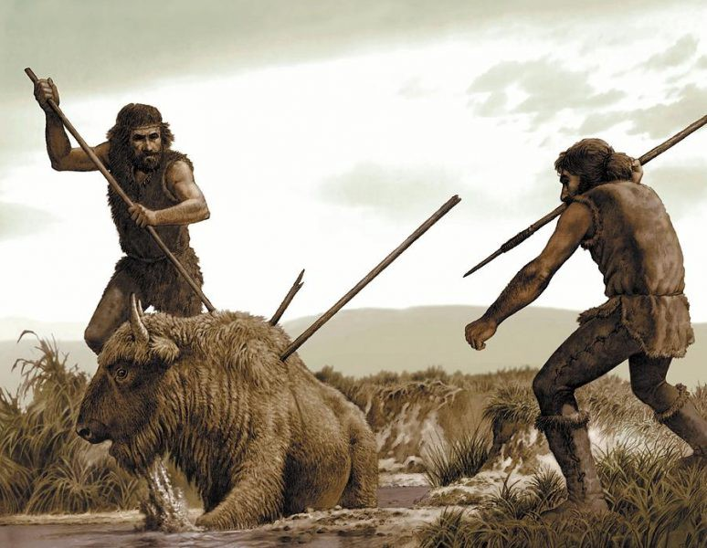
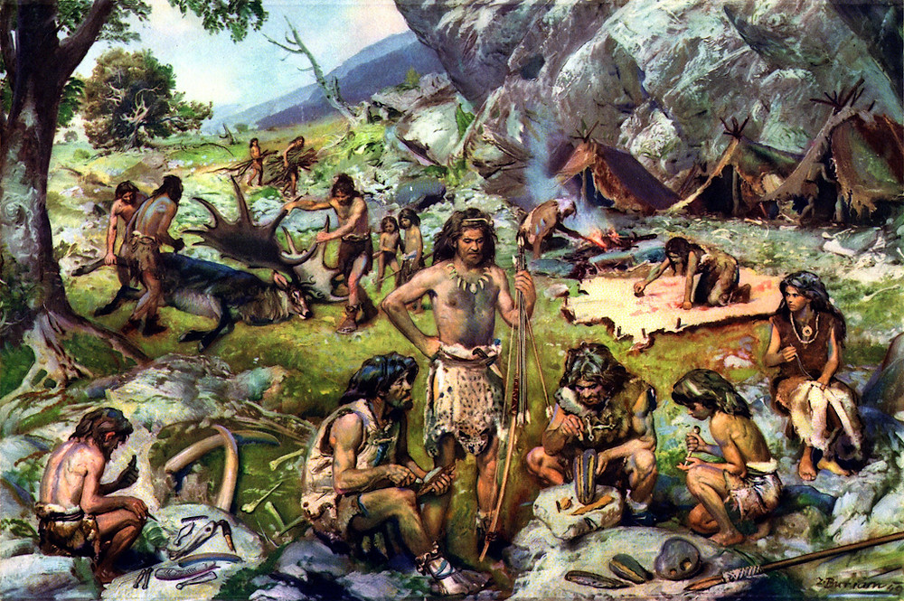
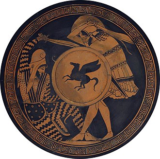

TARİH ÖNCESİ SAVAŞ
Yöresel Savaşlar

Günümüzde hala yaşayan avcı-toplayıcı toplulukların bazıları şiddet dozu yüksek bir yaşam sürmekte ve sıklıkla komşu gruplara baskın yapıp güç göstererek toprak, kadın ve yiyecek ele geçirmektedir.Kalahari'deki Buşmanlar gibi topluluklar ise savaşsız ve çok az cinayet işlenen bir hayat sürerler. İlk çağlarda bu topluluk tiplerinden hangisinin yaygın olduğu bilinmemekte, bu da tartışma konusu olmaktadır. Günümüzde hâlâ savaşan bu tarz topluluklardaki ortak yanlar ise savaşmanın oldukça törensel olması, yöresel savaş adı verilen ve çatışmanın süresinden savaş kurbanlarının sayısının sınırlanmasına kadar birçok tabu ve uygulama içermesidir. Yöresel savaşlar yapan kabileler arasında birkaç nesilde bir nüfus baskısı, kaynaklar üzerine anlaşmazlıklar ya da anlaşılamayan sebepler yüzünden gerçek savaşlar da çıkabilmektedir.
Paleolitik Çağ

İlk insanların kullandığı en yaygın silahlar basit ve kolay üretilebiliyordu. Sopa ve mızraklardan oluşan bu tarz silahlar MÖ 35.000 yıllarından beri avcılık için kullanılmış, başka amaçla kullanıldığına dair kanıt bulunamamıştır. Bu çağdan kalan mağara resimlerinden hiçbirinde insanın insana saldırdığı resmedilmemiştir. Sosyal evrimin bu aşamasında geniş çaplı bir savaşın olduğuna dair herhangi bir arkeolojik kanıt yoktur.
MÖ 12.000 yıllarından itibaren yay, topuz ve sapanın geliştirilmesiyle çarpışmalar değişikliğe uğramıştır. İlk savaşların ortaya çıkmasında yay büyük öneme sahiptir. Uzaktan saldırabilme olanağıyla, yakın döğüş silahlarından daha az risk taşır. İnsanlar arasında sopalarla savaşıldığına dair mağara resmine rastlanmaz. İki veya daha fazla grup insanın birbirlerine organize şekilde saldırmasının resmedilmesi, yayın gelişimi ile aynı zamana rastlar. Bu çizimlerde hatlar ve kollar belirgindir, değişik giysilerle resmedilmiş liderler göze çarpmaktadır. Bazı resimlerde de yandan kuşatma gibi askerî taktikler açıkça görülür.
Topuz, kişisel çarpışma için bir süre en favori silah olsa da deri zırhın geliştirilmesi etkisini sınırlamış, uzaktan saldırı silahlarıyla keskin kenarlı silahlar en çok kullanılan silah tipleri olmuştur.
ANTİK SAVAŞLAR
Pers-Yunan Savaşları
Yunan – Pers Savaşları, (sıklıkla Pers Savaşları olarak da geçer), Ahameniş İmparatorluğu (Pers İmparatorluğu) ile Yunan kent devletleri arasında MÖ 499 ile MÖ 449 arasında gerçekleşen bir dizi muharebedir. Politik olarak bölünmüş Antik Yunanistan'la, dönemin en güçlü imparatorluğu olan Pers İmparatorluğu arasındaki çatışmalar, esasen Büyük Kiros'un, MÖ 547 yılında İyonya'yı istila etmesiyle başlamıştı. Gerçekte Grek dünyası açısından Pers İmparatorluğu ile aradaki düşmanlık, İmparatorluk'un Büyük İskender'in seferi sonunda dağılmasına kadar iki yüzyıldan fazla bir süre devam etmiştir. Bu düşmanlık, Pers ordularının Yunanistan'a karşı MÖ 490'da ve MÖ 480-479 yıllarındaki iki saldırısıyla sıcak çatışmaya dönüşmüştü.
Grek bakış açısından tüm bu çekişmeler "Med olayı" olarak tanımlanmıştır. Yunanlar, Pers İmparatorluğu'nu oldukça iyi tanıyor ve bir Pers hanedanı tarafından yönetildiğini biliyor olmalarına karşın, ilk tanıdıkları adla, Medler olarak tanımlamaya devam ediyorlardı.
Peloponez Savaşı
Peloponez Savaşı (MÖ 431-404), Antik Yunanistan coğrafyasında yapılan, büyük şehir devletlerinden Atina ve onun imparatorluğunun, Sparta ve Peloponez Birliği karşısında yer aldığı savaştır. Korint ve kolonilerinden biri olan Korkyra arasındaki savaş Atina ve Sparta'nın karşı saflara geçmesiyle büyüdü ve MÖ 431'de Sparta ordusu Attika'ya yürüdü. Atina kuşatıldı. MÖ 460 yılında Atina şehrinin çevresine Pire'deki limanlarını kuşatan geniş bir sur inşa edilmiştir. Amaç donanma bağlantısının düşman tarafından kesilmesinin durdurulmasıdır.[2] Kuşatmaya bu geniş surlarla direnmeye çalışmış ancak MÖ 430 yılındaki veba salgını, surların arkasına çekilmiş olan Atina nüfusunun üçte birini yok etmiştir. MÖ 405 Aegospotami Savaşı'nın kaybedilmesi ile yiyecek ikmali duran Atina açlıkla boğuşmaya başladı ve MÖ 404 yılında teslim olmak zorunda kaldı.
ORTA ÇAĞ'DA SAVAŞ
Granada Savaşı
Granada Savaşı (1482-1492), Endülüs'ün Hristiyanların eline geçmek istenmesinden dolayı olmuştur. 2 Ocak 1492 yılında Granada teslim olur. Böylece İspanyol-Arap savaşı bitmiş olur. Harbden sonra Temmuz 1492'de pek çok Müslüman ve Yahudi, ülkesini terk etmek zorunda kalmıştır.
Worringen Savaşı
Worringen Muharebesi, günümüzde Belçika sınırları içinde yer alan Limburg'un dükü IV. Walram von Limburg'un 1280 yılında ölümü ile bölgede ortaya çıkan iktidar çekişmesinin 1288'de silahlı çatışmaya dönüşmesidir. Savaşı kaybeden Köln dükleri ve müttefiklerinin etki alanı daralmıştır. Buna karşılık Limburg'un Brabant hanedanının topraklarına katılması, bölgedeki birçok ülke açısından kalıcı etkilere sahip olmuştur.